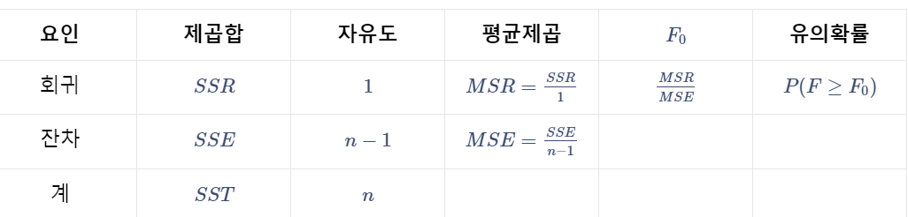
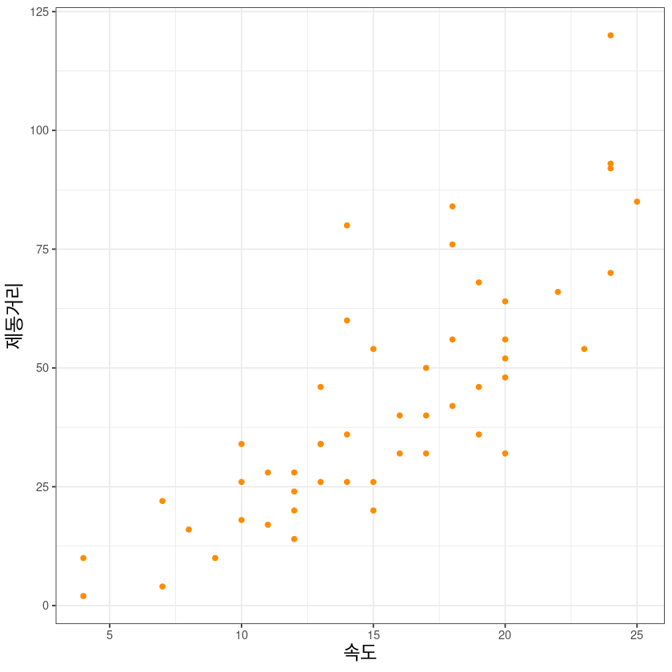
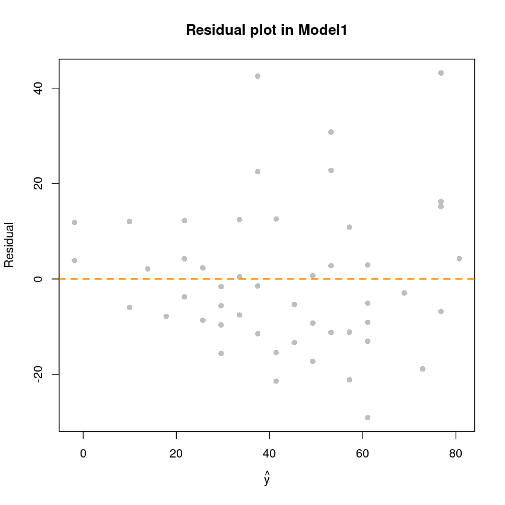
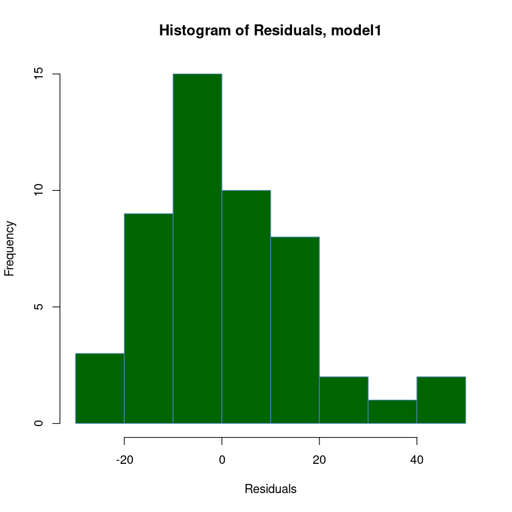

Q1.
원점을 지나는 회귀모형은 다음과 같이 정의할 수 있다.
\[y_i = \beta_1x_i + \epsilon_i, \quad \epsilon_i \overset{iid}{\sim} N(0,\sigma^2), \quad i=1,\dots, n\]
(1) 오차제곱합을 정의하고 \(\beta_1\)의 최소제곱추정량 (\(\hat{\beta}_1\))을 구하여라.
오차제곱합은 다음과 같이 정의할 수 있다.
\[SSE = \sum_{i=1}^n\epsilon_i^2 = \sum_{i=1}^n(y_i-\beta_1x_i)^2\]
오차제곱합을 최소로 하는 \(\beta_1\)의 값을 추정값 \(\hat{\beta}_1\)으로 하는 방법을 최소제곱법(method of least squares)이라고 한다. 오차제곱합 \(S\)를 최소화 시키는 \(\beta_1\)를 구하기 위하여 \(S\)를 \(\beta_1\)에 대하여 편미분하여 그 값을 \(0\)으로 만드는 \(\hat{\beta}_0, \hat{\beta}_1\)으로 대치하여 정리하면 다음과 같다.
\[\begin{align*}\frac{\partial{S}}{\partial{\beta}_0} &= -2\sum_{i=1}^nx_i(y_i-\beta_1x_i) = 0 \\ &\Rightarrow \sum_{i=1}^nx_iy_i - \hat{\beta}_1\sum_{i=1}^nx_i^2 = 0 \\ &\Rightarrow \hat{\beta}_1 = \frac{\sum_{i=1}^nx_iy_i}{\sum_{i=1}^nx_i^2}\end{align*}\]
(2) \(E(\hat{\beta}_1\))을 구하여라.
\(\hat{\beta}_1\)은 관측값 \(y_i\)에 대한 선형추정량이다. (\(\to\)기댓값과 분산을 쉽게 유도)
\(\hat{\beta}_1\)을 \(y_i\)의 선형결합 꼴로 만들어주기 위하여 \(\hat{\beta}_1 = \frac{\sum_{i=1}^nx_iy_i}{\sum_{i=1}^nx_i^2}\)에서 \(\frac{x_i}{\sum_{i=1}^n x_i^2}\)를 \(a_i\)로 두자.
\[\begin{align*}E(\hat{\beta}_1) &= E\left(\frac{\sum_{i=1}^nx_iy_i}{\sum_{i=1}^nx_i^2}\right) \\ &= E\left(\sum_{i=1}^na_iy_i\right),\quad a_i = \frac{x_i}{\sum_{i=1}^n x_i^2} \\ &= \sum_{i=1}^na_iE(y_i) , \quad y_i \sim N(\beta_1x_i, \sigma^2)\\ &= \beta_1\sum_{i=1}^na_ix_i = \beta_1\sum_{i=1}^n\frac{x_i}{\sum_{i=1}^n x_i^2}x_i\\ &= \beta_1\frac{\sum_{i=1}^nx_i^2}{\sum_{i=1}^n x_i^2} = \beta_1\end{align*}\]
(3) \(Var(\hat{\beta}_1)\)을 구하여라.
\[\begin{align*}Var(\hat{\beta}_1) &= Var\left(\sum_{i=1}^na_iy_i\right) \\ &= \sum_{i=1}^na_i^2Var(y_i) \\ &= \frac{\sum_{i=1}^nx_i^2}{\left[\sum_{i=1}^nx_i^2\right]^2}\sigma^2, \quad y_i\sim N(\beta_1x_i, \sigma^2) \\ &= \frac{\sigma^2}{\sum_{i=1}^n x_i^2}\end{align*}\]
(4) 제곱합에 대한 분산분석표를 작성하여라.

(5) 회귀모형의 유의성 검정을 하기위한 가설을 설정하고, 검정통계량을 제시하여라.
- 회귀직선의 유의성 검정 (F-test)
가설
- \(H_0: \beta_1 = 0\) (적합된 회귀모형은 유의하지 않다.)
- \(H_1: \beta_1 \neq 0\) (적합된 회귀모형은 유의하다.)
검정통계량 - \(F = \frac{SSR/1}{SSE/(n-1)} = \frac{MSR}{MSE} \sim_{H_0} F(1, n-1)\)
(6) 위의 가설에 대해, 유의수준 \(\alpha\)에서 검정하는 방법을 기술하여라.
1. 기각역(critical region)
\(F_0 \geq F_{\alpha}(1, n-1)\) 이면 귀무가설을 기각할 수 있다. 즉, 적합된 회귀선이 유의하다고 할 수 있다.
2. 유의확률(p-value)
\(P(F\geq F_0) < \alpha\) 이면 귀무가설을 기각할 수 있다. 즉, 적합된 회귀선이 유의하다고 할 수 있다.
(7) 다음의 가설에 대한 검정통계량을 제시하고, 유의수준 \(\alpha\)에서 가설 검정하는 방법을 기술하여라.
\[H_0: \beta_1 = 0 \text{ vs. } H_1: \beta_1 > 0\]
- 회귀계수에 대한 유의성 검정
1. 기각역(critical region)
검정통계량: \(T = \frac{\hat{\beta}_1-0}{\sqrt{Var(\hat{\beta}_1)}}\sim_{H_0} t(n-1), \quad \text{관측값: } t\)
\(\begin{align*}T = \frac{\hat{\beta}_1-0}{\sqrt{Var(\hat{\beta}_1)}} = \frac{\hat{\beta}_1}{\sqrt{\frac{\sigma^2}{\sum_{i=1}^n x_i^2}}} = \frac{\hat{\beta}_1}{\frac{\sigma}{\sqrt{\sum_{i=1}^n x_i^2}}} = \frac{\hat{\beta}_1}{\frac{\hat{\sigma}}{\sqrt{\sum_{i=1}^n x_i^2}}} = \frac{\hat{\beta}_1}{\sqrt{\frac{MSE}{\sum_{i=1}^n x_i^2}}}\end{align*}\)
1. 기각역(critical region)
\(t \geq t_{\alpha}(n-1)\) 이면(기각역에 포함되면) 귀무가설을 기각할 수 있다. 즉, 회귀계수는 유의하다고 할 수 있다.
2. 유의확률(p-value)
유의확률 \(P(T\geq t)\)가 주어진 유의수준 \(\alpha\) 보다 작으면 귀무가설을 기각할 수 있다.
Q2.
cars.csv 데이터를 이용하여 회귀모형을 적합하려고 한다. 이는 자동차의 속도(mph)에 따른 제동거리(ft)를 조사한 데이터이다. 다음 물음에 답하여라. (R을 이용하여 풀이) (검정에서는 유의수준 \(\alpha=0.05\) 사용)
| speed | dist | |
|---|---|---|
| <int> | <int> | |
| 1 | 4 | 2 |
| 2 | 4 | 10 |
| 3 | 7 | 4 |
| 4 | 7 | 22 |
| 5 | 8 | 16 |
| 6 | 9 | 10 |
- 50
- 2
(1) 이 데이터의 산점도를 그리고 두 변수 사이의 관계를 설명하시오.
ggplot(cars, aes(speed, dist)) +
geom_point(col = 'darkorange') +
xlab('속도') + ylab('제동거리') +
theme_bw() +
theme(axis.title = element_text(size=14))
- 자동차의 속도와 제동거리와 양의 상관이 있는 것으로 보인다. (자동차 속도가 증가하면 제동거리가 증가하는 패턴을 보인다.)
(2) 최소제곱법의 의한 회귀직선을 적합시키고, 모형 적합 결과를 설명하시오.
\[\widehat{\text{dist}} = 3.932\times \text{speed} - 17.579\]
Call:
lm(formula = dist ~ speed, data = cars)
Coefficients:
(Intercept) speed
-17.579 3.932
Call:
lm(formula = dist ~ speed, data = cars)
Residuals:
Min 1Q Median 3Q Max
-29.069 -9.525 -2.272 9.215 43.201
Coefficients:
Estimate Std. Error t value Pr(>|t|)
(Intercept) -17.5791 6.7584 -2.601 0.0123 *
speed 3.9324 0.4155 9.464 1.49e-12 ***
---
Signif. codes: 0 ‘***’ 0.001 ‘**’ 0.01 ‘*’ 0.05 ‘.’ 0.1 ‘ ’ 1
Residual standard error: 15.38 on 48 degrees of freedom
Multiple R-squared: 0.6511, Adjusted R-squared: 0.6438
F-statistic: 89.57 on 1 and 48 DF, p-value: 1.49e-12cat('기각치 F(1,48;0.05): ', qf(0.95, 1, 48), '\n') ## F(0.05)
cat('F0: ' , summary(model1)$fstatistic[1])기각치 F(1,48;0.05): 4.042652
F0: 89.56711\(F_0 > F(1, 48 ;0.05)\) 이므로 회귀모형은 유의하지 않다는 귀무가설을 기각할 수 있다. 따라서 적합된 회귀모형은 유의하다고 판단한다.
summary - speed가 \(1\tt{mph}\) 증가할수록 dist가 \(3.9324\tt{ft}\)만큼 증가하는 경향이 있다. - 적합된 회귀선은 전체 변동 중 \(65.11\%\) 를 설명한다. - \(F\)의 기각치는 \(4.04\)인데 \(F_0=89.567\)이므로 적합된 회귀직선은 매우 유의함을 알 수 있다. - speed의 회귀계수 역시 \(t-value\) 에 대응하는 \(p-value<0.05\) 이므로 유의함을 알 수 있다.
(3) 데이터의 산점도를 그리고 추정한 회귀직선을 (1)에서 그린 산점도 위에 그리시오.
(4) 분산분석표를 작성하고 회귀직선의 유의 여부를 검정하시오.
\(H_0: \beta_1 = 0 \text{ (회귀모형이 유의하지 않다.) } \text{ vs. } H_1: \beta_1 \neq 0 \text{ (회귀모형이 유의하다.) }\)
| Df | Sum Sq | Mean Sq | F value | Pr(>F) | |
|---|---|---|---|---|---|
| <int> | <dbl> | <dbl> | <dbl> | <dbl> | |
| speed | 1 | 21185.46 | 21185.4589 | 89.56711 | 1.489836e-12 |
| Residuals | 48 | 11353.52 | 236.5317 | NA | NA |
유의수준 \(5\%\) 하에서 F-통계량에 대응되는 p-value가 \(1.489836e-12\)로 유의수준 \(0.05\) 보다 작으므로 귀무가설을 기각할 수 있다. 따라서 적합된 회귀모형은 유의하다고 판단한다.
(5) 결정계수와 상관계수를 구하고 이 둘의 관계를 설명하시오.
단순선형회귀일 때는 표본상관계수의 제곱이 결정계수와 같다. 즉, \(r^2 = R^2\)
$R^2 = = = 0.6511 = r_{xy}^2 $
- 'adj.r.squared'
- 'aliased'
- 'call'
- 'coefficients'
- 'cov.unscaled'
- 'df'
- 'fstatistic'
- 'r.squared'
- 'residuals'
- 'sigma'
- 'terms'
(6) \(\beta_0, \beta_1\)에 대한 개별 회귀계수의 유의성 검정을 수행하시오.
\(H_0: \beta_1 = 0 \text{ vs. } H_1: \beta_1 \neq 0\)
\(H_0: \beta_0 = 0 \text{ vs. } H_1: \beta_0 \neq 0\)
| Estimate | Std. Error | t value | Pr(>|t|) | |
|---|---|---|---|---|
| (Intercept) | -17.579095 | 6.7584402 | -2.601058 | 1.231882e-02 |
| speed | 3.932409 | 0.4155128 | 9.463990 | 1.489836e-12 |
유의수준 \(5\%\) 하에서 각각의 회귀계수 \(\beta_0, \beta_1\)의 \(t-\)통계량에 대응하는 p-value가 모두 유의수준 \(0.05\)보다 작으므로 귀무가설을 기각할 수 있다. 따라서 회귀계수 \(\beta_0, \beta_1\)은 유의하다고 할 수 없다.
(7) \(\beta_0, \beta_1\)에 대한 \(90\%\) 신뢰구간을 구하시오.
\[\hat{\beta}_1 \pm t_{\alpha/2}(n-2) * se(\hat{\beta}_1)\]
- 함수 이용
| 5 % | 95 % | |
|---|---|---|
| (Intercept) | -28.914514 | -6.243676 |
| speed | 3.235501 | 4.629317 |
- 직접 계산
- (Intercept)
- -28.9145142706524
- speed
- 3.23550067631595
(8) 속도가 \(18.5\text{mpg}\)인 차량의 평균 제동거리를 예측하고, \(95\%\) 신뢰구간을 구하시오.
\(\hat{y} = \hat{\beta}_0 + \hat{\beta}_1 * 18.5\)
(9) 속도가 \(18.5\text{mpg}\)인 차량의 개별 제동거리를 예측하고, \(95\%\) 신뢰구간을 구하시오.
predict(model1,
newdata = new_spd,
interval = c('prediction'), ## prediction option (개별 y)
level = 0.95) ## 개별 y| fit | lwr | upr | |
|---|---|---|---|
| 1 | 55.17047 | 23.83284 | 86.5081 |
- 신뢰구간이 동일한 \(95\%\) 임에도 불구하고 평균 제동거리의 신뢰구간에 비해 개별 제동거리의 신뢰구간 폭이 증가한 것을 볼 수 있다. 불확실성이 증가했기 때문에 이러한 결과가 나왔다고 할 수 있다.
dt_pred <- data.frame(
speed = c(1:50),
predict(model1,
newdata = data.frame(speed=c(1:50)),
interval='confidence', level = 0.95),
predict(model1,
newdata=data.frame(speed=c(1:50)),
interval='prediction',level = 0.95)[,-1])
names(dt_pred)[5:6] <- c('plwr', 'pupr') ## 개별 y에 대한 신뢰구간
dt_pred| speed | fit | lwr | upr | plwr | pupr | |
|---|---|---|---|---|---|---|
| <int> | <dbl> | <dbl> | <dbl> | <dbl> | <dbl> | |
| 1 | 1 | -13.646686 | -26.447265 | -0.846107 | -47.114135 | 19.82076 |
| 2 | 2 | -9.714277 | -21.733068 | 2.304513 | -42.890574 | 23.46202 |
| 3 | 3 | -5.781869 | -17.026591 | 5.462853 | -38.685654 | 27.12192 |
| 4 | 4 | -1.849460 | -12.329543 | 8.630624 | -34.499842 | 30.80092 |
| 5 | 5 | 2.082949 | -7.644150 | 11.810048 | -30.333587 | 34.49948 |
| 6 | 6 | 6.015358 | -2.973341 | 15.004056 | -26.187314 | 38.21803 |
| 7 | 7 | 9.947766 | 1.678977 | 18.216556 | -22.061423 | 41.95696 |
| 8 | 8 | 13.880175 | 6.307527 | 21.452823 | -17.956287 | 45.71664 |
| 9 | 9 | 17.812584 | 10.905120 | 24.720047 | -13.872245 | 49.49741 |
| 10 | 10 | 21.744993 | 15.461917 | 28.028068 | -9.809601 | 53.29959 |
| 11 | 11 | 25.677401 | 19.964525 | 31.390278 | -5.768620 | 57.12342 |
| 12 | 12 | 29.609810 | 24.395138 | 34.824483 | -1.749529 | 60.96915 |
| 13 | 13 | 33.542219 | 28.731336 | 38.353102 | 2.247492 | 64.83695 |
| 14 | 14 | 37.474628 | 32.947783 | 42.001472 | 6.222305 | 68.72695 |
| 15 | 15 | 41.407036 | 37.021152 | 45.792921 | 10.174821 | 72.63925 |
| 16 | 16 | 45.339445 | 40.937676 | 49.741215 | 14.104995 | 76.57390 |
| 17 | 17 | 49.271854 | 44.698988 | 53.844720 | 18.012832 | 80.53088 |
| 18 | 18 | 53.204263 | 48.321378 | 58.087148 | 21.898386 | 84.51014 |
| 19 | 19 | 57.136672 | 51.829133 | 62.444210 | 25.761756 | 88.51159 |
| 20 | 20 | 61.069080 | 55.247285 | 66.890875 | 29.603089 | 92.53507 |
| 21 | 21 | 65.001489 | 58.597384 | 71.405594 | 33.422574 | 96.58040 |
| 22 | 22 | 68.933898 | 61.896301 | 75.971494 | 37.220445 | 100.64735 |
| 23 | 23 | 72.866307 | 65.156644 | 80.575970 | 40.996976 | 104.73564 |
| 24 | 24 | 76.798715 | 68.387653 | 85.209778 | 44.752478 | 108.84495 |
| 25 | 25 | 80.731124 | 71.596083 | 89.866166 | 48.487298 | 112.97495 |
| 26 | 26 | 84.663533 | 74.786898 | 94.540168 | 52.201813 | 117.12525 |
| 27 | 27 | 88.595942 | 77.963783 | 99.228100 | 55.896429 | 121.29545 |
| 28 | 28 | 92.528350 | 81.129508 | 103.927193 | 59.571576 | 125.48512 |
| 29 | 29 | 96.460759 | 84.286181 | 108.635337 | 63.227708 | 129.69381 |
| 30 | 30 | 100.393168 | 87.435427 | 113.350908 | 66.865293 | 133.92104 |
| 31 | 31 | 104.325577 | 90.578517 | 118.072636 | 70.484817 | 138.16634 |
| 32 | 32 | 108.257985 | 93.716452 | 122.799519 | 74.086776 | 142.42919 |
| 33 | 33 | 112.190394 | 96.850033 | 127.530756 | 77.671674 | 146.70911 |
| 34 | 34 | 116.122803 | 99.979906 | 132.265699 | 81.240021 | 151.00558 |
| 35 | 35 | 120.055212 | 103.106599 | 137.003824 | 84.792330 | 155.31809 |
| 36 | 36 | 123.987620 | 106.230544 | 141.744697 | 88.329114 | 159.64613 |
| 37 | 37 | 127.920029 | 109.352101 | 146.487958 | 91.850883 | 163.98918 |
| 38 | 38 | 131.852438 | 112.471568 | 151.233308 | 95.358144 | 168.34673 |
| 39 | 39 | 135.784847 | 115.589198 | 155.980495 | 98.851399 | 172.71829 |
| 40 | 40 | 139.717255 | 118.705205 | 160.729306 | 102.331141 | 177.10337 |
| 41 | 41 | 143.649664 | 121.819771 | 165.479557 | 105.797854 | 181.50147 |
| 42 | 42 | 147.582073 | 124.933053 | 170.231093 | 109.252014 | 185.91213 |
| 43 | 43 | 151.514482 | 128.045184 | 174.983780 | 112.694084 | 190.33488 |
| 44 | 44 | 155.446891 | 131.156281 | 179.737500 | 116.124517 | 194.76926 |
| 45 | 45 | 159.379299 | 134.266446 | 184.492153 | 119.543753 | 199.21485 |
| 46 | 46 | 163.311708 | 137.375767 | 189.247649 | 122.952219 | 203.67120 |
| 47 | 47 | 167.244117 | 140.484322 | 194.003912 | 126.350328 | 208.13791 |
| 48 | 48 | 171.176526 | 143.592180 | 198.760871 | 129.738482 | 212.61457 |
| 49 | 49 | 175.108934 | 146.699401 | 203.518468 | 133.117067 | 217.10080 |
| 50 | 50 | 179.041343 | 149.806040 | 208.276646 | 136.486457 | 221.59623 |
(10) 원점을 지나는 회귀직선을 구하시오.
\[\widehat{\text{dist}} = 2.9091\times \text{speed}\]
Call:
lm(formula = dist ~ 0 + speed, data = cars)
Residuals:
Min 1Q Median 3Q Max
-26.183 -12.637 -5.455 4.590 50.181
Coefficients:
Estimate Std. Error t value Pr(>|t|)
speed 2.9091 0.1414 20.58 <2e-16 ***
---
Signif. codes: 0 ‘***’ 0.001 ‘**’ 0.01 ‘*’ 0.05 ‘.’ 0.1 ‘ ’ 1
Residual standard error: 16.26 on 49 degrees of freedom
Multiple R-squared: 0.8963, Adjusted R-squared: 0.8942
F-statistic: 423.5 on 1 and 49 DF, p-value: < 2.2e-16(11) 위 회귀직선에서 회귀계수(기울기)의 \(90\%\) 신뢰구간을 구하시오.
- 함수이용
- 직접계산
Call:
lm(formula = dist ~ 0 + speed, data = cars)
Residuals:
Min 1Q Median 3Q Max
-26.183 -12.637 -5.455 4.590 50.181
Coefficients:
Estimate Std. Error t value Pr(>|t|)
speed 2.9091 0.1414 20.58 <2e-16 ***
---
Signif. codes: 0 ‘***’ 0.001 ‘**’ 0.01 ‘*’ 0.05 ‘.’ 0.1 ‘ ’ 1
Residual standard error: 16.26 on 49 degrees of freedom
Multiple R-squared: 0.8963, Adjusted R-squared: 0.8942
F-statistic: 423.5 on 1 and 49 DF, p-value: < 2.2e-16(12) 원점을 지나는 회귀직선에 대한 분산분석표를 작성하고, 회귀직선의 유의 여부를 검정하시오.
\(H_0: \beta_1 = 0 \text{ vs. }H_1: \beta_0 \neq 0\)
| Df | Sum Sq | Mean Sq | F value | Pr(>F) | |
|---|---|---|---|---|---|
| <int> | <dbl> | <dbl> | <dbl> | <dbl> | |
| speed | 1 | 111949.22 | 111949.2232 | 423.4682 | 9.227817e-26 |
| Residuals | 49 | 12953.78 | 264.3628 | NA | NA |
기각치 F(0.05): 4.038393
F0: 423.4682\(F_0 > F(1,49;0.05)\)
\(F\)의 기각치는 \(4.038\)인데 \(F_0=423.4682\)이므로 적합된 회귀직선은 매우 유의함을 알 수 있다.
유의수준 \(5\%\)하에서 F-통계량에 대응하는 \(p-value=9.227817e-26\)로 유의수준 \(5\%\) 보다 작으므로 귀무가설을 기각할 수 있다. 따라서 회귀모형은 유의하다고 할 수 있다.
(13) 원점을 지나는 회귀직선의 결정계수를 구하시오.
(14) 원점을 포함한 회귀직선과 포함하지 않은 회귀직선의 결과를 비교하여라.
Call:
lm(formula = dist ~ speed, data = cars)
Residuals:
Min 1Q Median 3Q Max
-29.069 -9.525 -2.272 9.215 43.201
Coefficients:
Estimate Std. Error t value Pr(>|t|)
(Intercept) -17.5791 6.7584 -2.601 0.0123 *
speed 3.9324 0.4155 9.464 1.49e-12 ***
---
Signif. codes: 0 ‘***’ 0.001 ‘**’ 0.01 ‘*’ 0.05 ‘.’ 0.1 ‘ ’ 1
Residual standard error: 15.38 on 48 degrees of freedom
Multiple R-squared: 0.6511, Adjusted R-squared: 0.6438
F-statistic: 89.57 on 1 and 48 DF, p-value: 1.49e-12
Call:
lm(formula = dist ~ 0 + speed, data = cars)
Residuals:
Min 1Q Median 3Q Max
-26.183 -12.637 -5.455 4.590 50.181
Coefficients:
Estimate Std. Error t value Pr(>|t|)
speed 2.9091 0.1414 20.58 <2e-16 ***
---
Signif. codes: 0 ‘***’ 0.001 ‘**’ 0.01 ‘*’ 0.05 ‘.’ 0.1 ‘ ’ 1
Residual standard error: 16.26 on 49 degrees of freedom
Multiple R-squared: 0.8963, Adjusted R-squared: 0.8942
F-statistic: 423.5 on 1 and 49 DF, p-value: < 2.2e-16| Df | Sum Sq | Mean Sq | F value | Pr(>F) | |
|---|---|---|---|---|---|
| <int> | <dbl> | <dbl> | <dbl> | <dbl> | |
| speed | 1 | 21185.46 | 21185.4589 | 89.56711 | 1.489836e-12 |
| Residuals | 48 | 11353.52 | 236.5317 | NA | NA |
| Df | Sum Sq | Mean Sq | F value | Pr(>F) | |
|---|---|---|---|---|---|
| <int> | <dbl> | <dbl> | <dbl> | <dbl> | |
| speed | 1 | 111949.22 | 111949.2232 | 423.4682 | 9.227817e-26 |
| Residuals | 49 | 12953.78 | 264.3628 | NA | NA |
- R-squared, Adjusted R-squared 모두 model2가 더 크므로 model2가 더 좋은 것 같다. 즉, 절편이 없는(원점을 지나는) 회귀모형이 더 좋은 것 같다.
(15) 잔차에 대한 산점도를 그리고, 결과를 설명하여라.
## Model1 residual plot
plot(fitted(model1),resid(model1), col = 'grey', pch=16,
xlab = expression(hat(y)),
ylab = "Residual",
main = "Residual plot in Model1")
abline(h=0, col='darkorange', lty=2, lwd=2)
\(\text{resiaul}=0\)을 기준으로 위\(\cdot\)아래가 대칭적으로 잘 퍼져있는 것 처럼 보인다. (\(\hat{y}\)가 커질수록 조금 증가하는 것 같기도 하지만 추후 검정을 통해 확인) \(\to\) 등분산, 선형성
잔차의 산점도에 별다른 패턴이 보이지 않는 것 같다. \(\to\) 독립성
(16) 잔차에 대한 등분산성 검정을 수행하시오.
- Breusch-Pegan Teset
\(H_0\): 등분산 vs. \(H_1\): 이분산 (Heteroscedasticity)
\(p-value = 0.07297\)로 유의수준 \(0.05\) 보다 크므로 귀무가설을 기각할 수 없다. 따라서 유의수준 \(5\%\)하에서 잔차들이 등분산성을 만족한다.
- 잔차에 대한 히스토그램, QQ plot을 그리고, 정규성 검정을 수행하여라.
잔차의 QQPlot을 보면 45도선 기준으로 오른쪽 꼬리부분의 점들이 선에서 많이 벗어나 있는 것을 확인할 수 있다.
hist(cars$resid,
xlab = "Residuals",
main = "Histogram of Residuals, model1",
col = "darkgreen",
border = "steelblue")
- 잔차들의 히스토그램을 봤을 때 약간 오른쪽으로 꼬리가 긴 skewed된 그래프이다.
Shapiro-Wilk normality test
data: resid(model1)
W = 0.94509, p-value = 0.02152Shapiro-Wilk 정규성 검정 결과 \(p-value=0.02152\)로 유의수준 \(0.05\) 보다 작으므로 유의수준 \(5\%\)하에서 귀무가설을 기각할 수 있다. 따라서 잔차는 정규성을 만족한다고 판단한다.
(18) 잔차에 대한 독립성 검정을 수행하시오.
Durbin-Watson test
data: model1
DW = 1.6762, p-value = 0.1904
alternative hypothesis: true autocorrelation is not 0잔차의 독립성을 검정하는 Durbin-Watson 검정 결과 \(p-value = 0.1904\)로 유의수준 \(5\%\) 보다 크므로 귀무가설을 기각할 수 없다.
Q3.
원하는 데이터를 이용하여 단순선형회귀모형을 적합하여라. (발표)
- 발표는 5~10분
- 최소 50개 이상의 데이터 사용
- 발표 자료를 위 과제와 별도로 작성